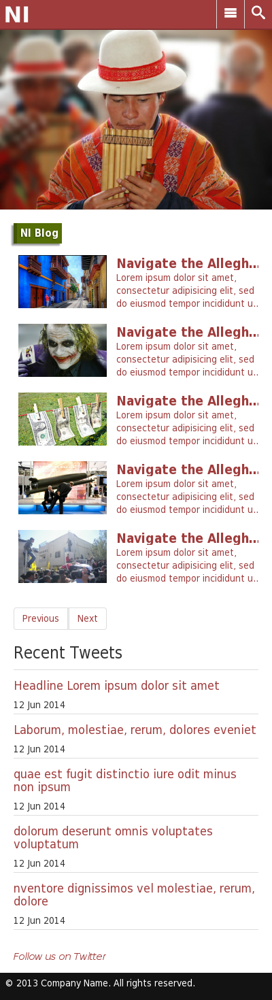
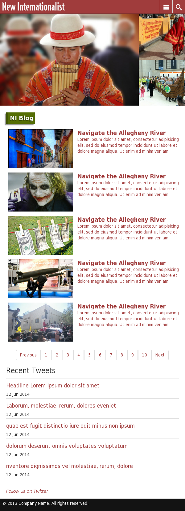
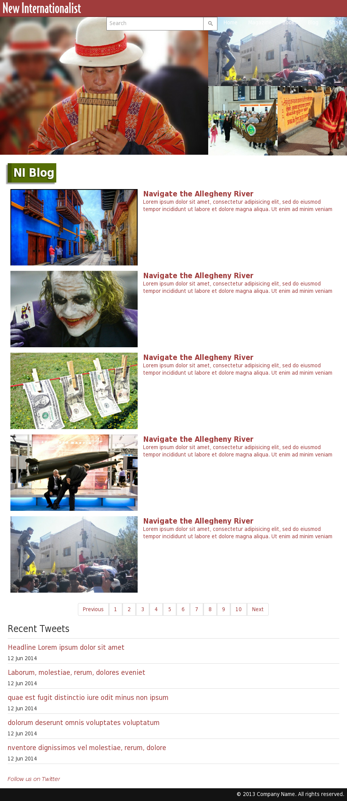

This page contains the design standards used in creating http://newint.org. These guidelines can be used when creating any subsequent pages or other web projects related to http://newint.org.
There are three major brakepoints for the page layout: '400px', '600px' and '900px'. The following examples show how the website looks at these three viewport widths:
  